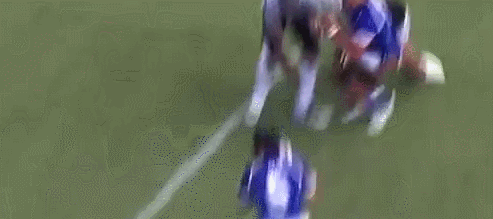
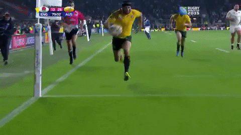

Some action about rugby

Concentration
it's important to be concentrated in rugby because a mistake happens so quickly.

Tackle
A tackle occurs when a player carrying the ball is simultaneously held by one or more opponents and is knocked to the ground..

Try
In rugby union, a try is the playing action consisting of flattening the ball into the opponent's goal. This action allows you to score five points, and attempt a transformation, worth two additional points.